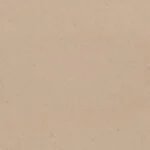

Cubremuro – Plano con goterones

Podrá disponer de Cubremuros en hormigón polímero en una amplia gama de anchuras, con los diseños de piezas con bajantes o con goterones, plano o con vertientes. Weser le ofrece la posibilidad del suministro de piezas a medida o medidas estándar. Ofrecemos 3 colores estándar y la opción de fabricar en cualquier color de la carta RAL o acabados especiales.
Colores
Carta Ral

Beige
Blanco
Gris
Polimero